×

Form Exploration
Collaborators
Spencer Bowman (Engineer)
Wenqing Yin (Designer)
Time-frame
3 weeks | Oct 2019
Project overview
This is an interactive machine created for children aged around 4. Through mimicking the natural process of a flower blooming and wilting with artificial material, this device is intended for bring children joy of playing and curiosity towards how we can be connected with the nature in an artificial environment.
Final Outcome
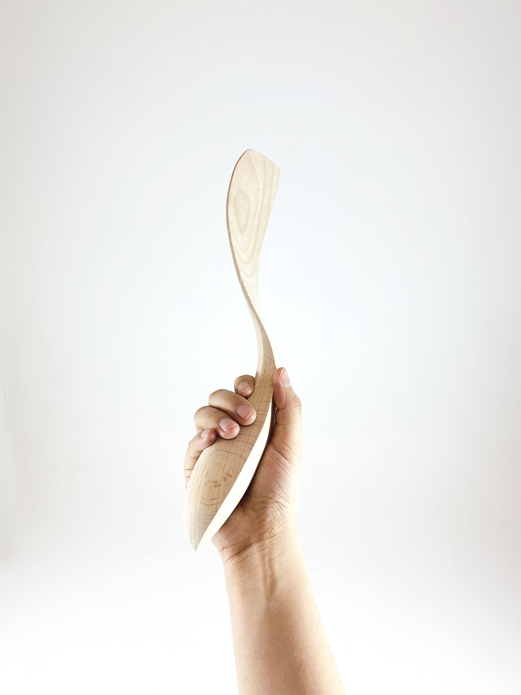
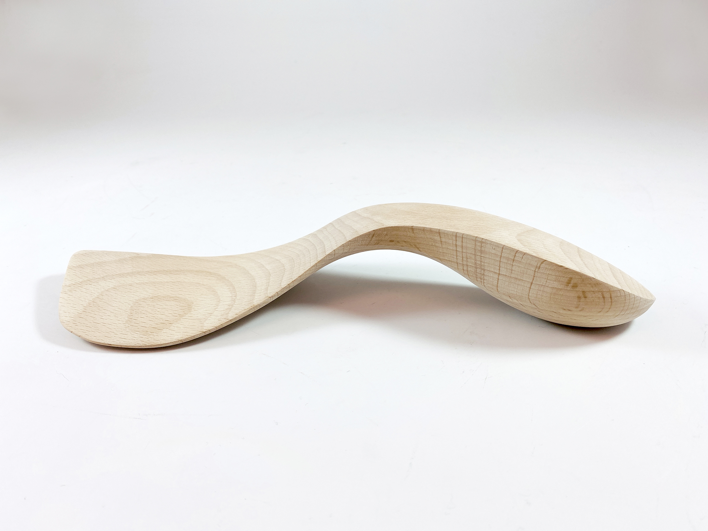
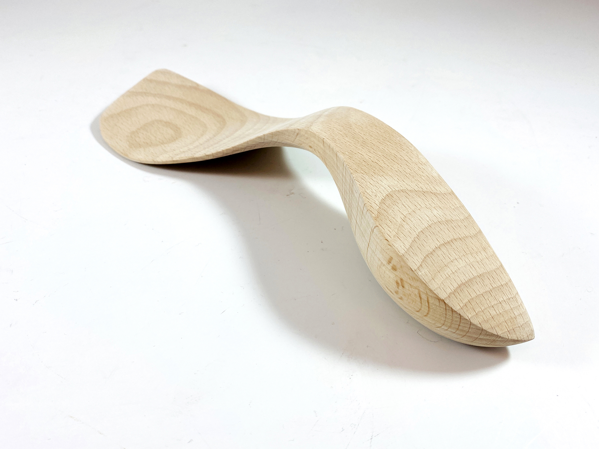

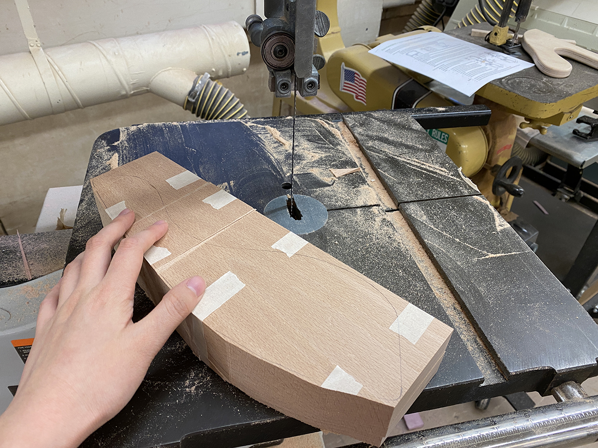
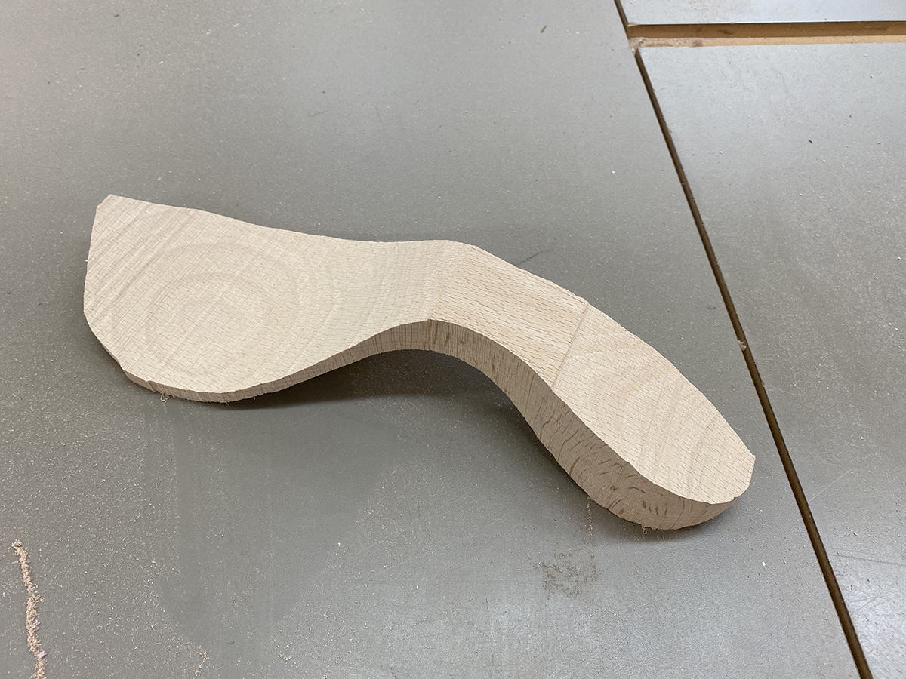
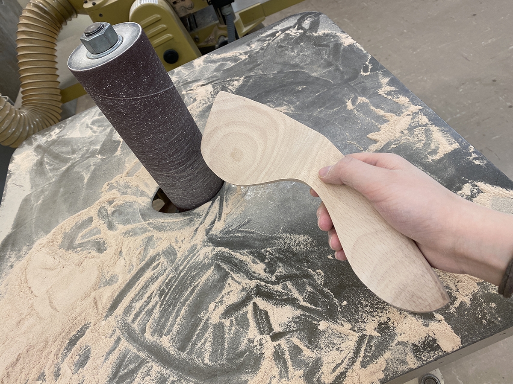
Process
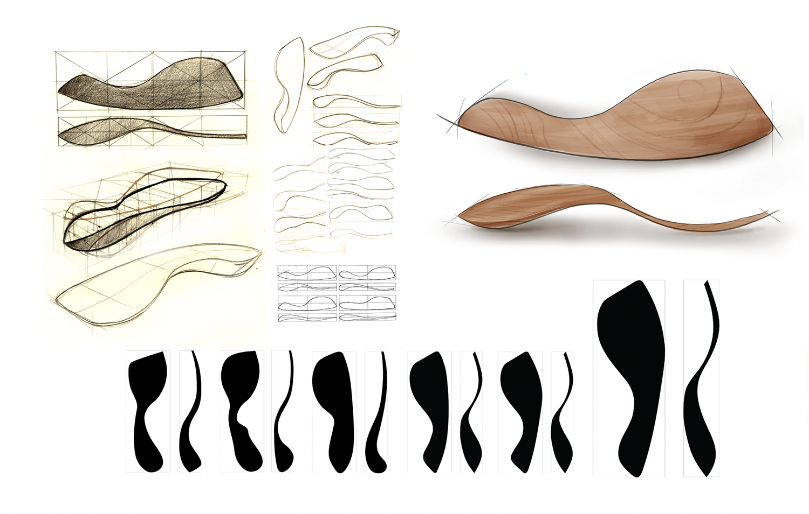
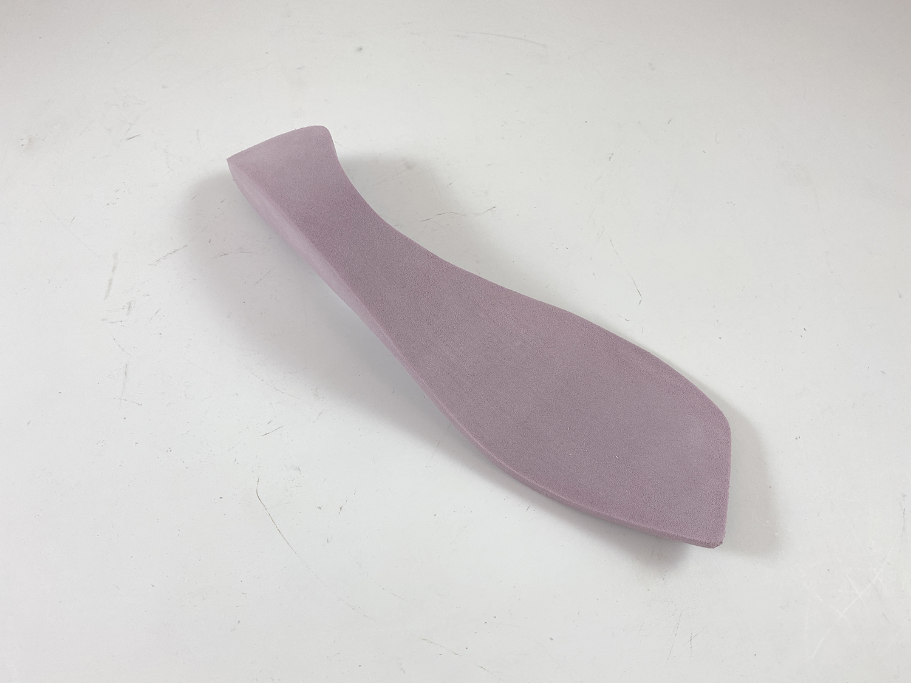
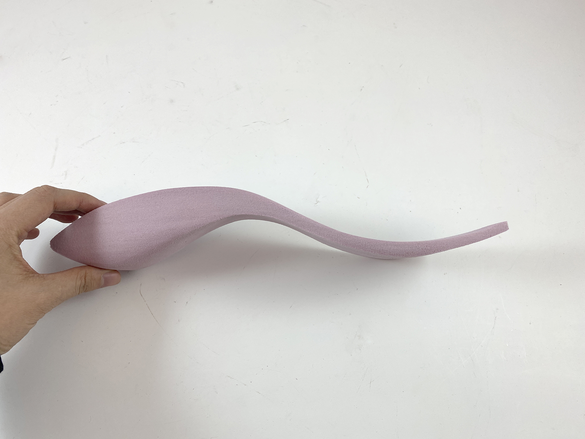
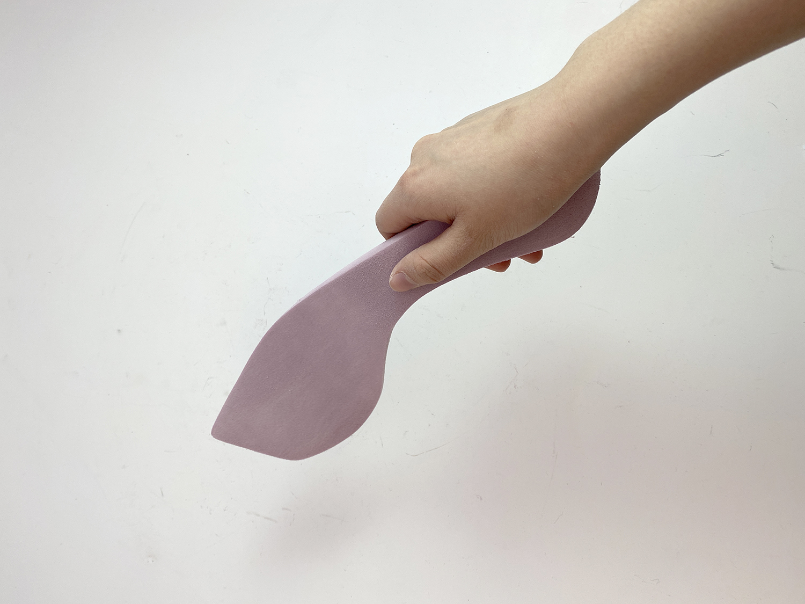
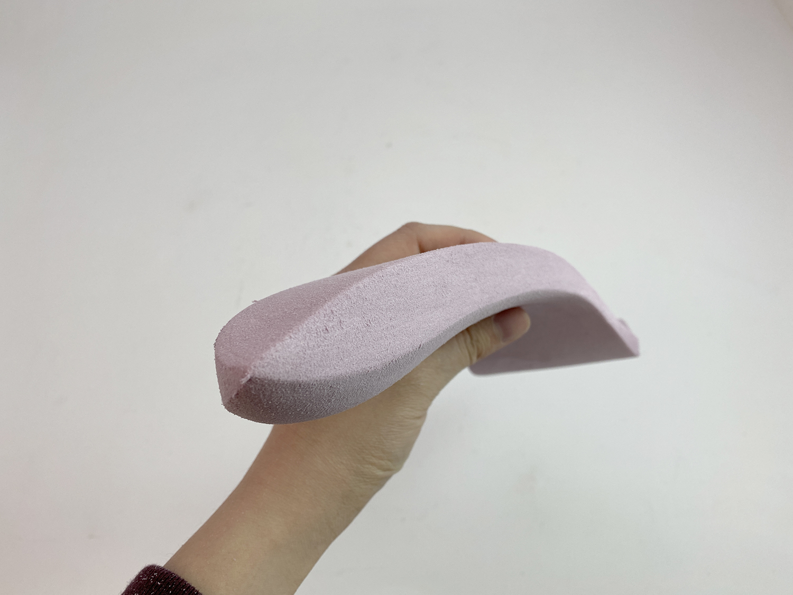
Final Outcome